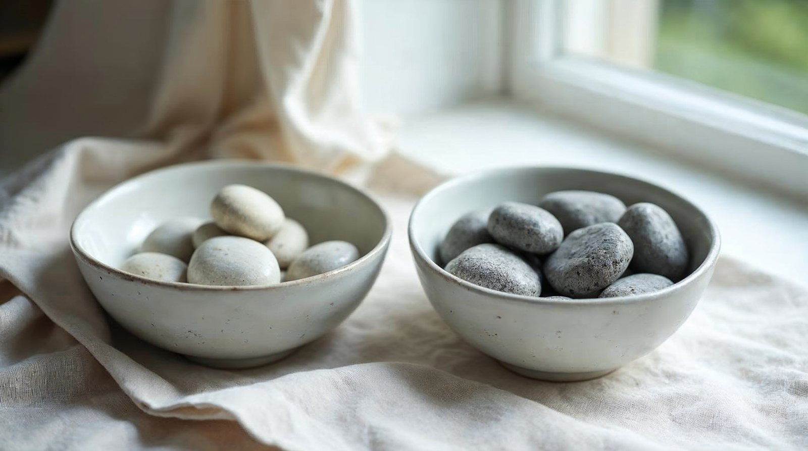
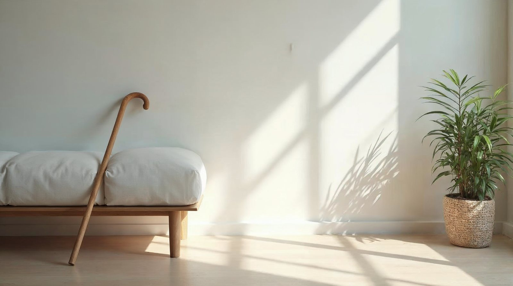
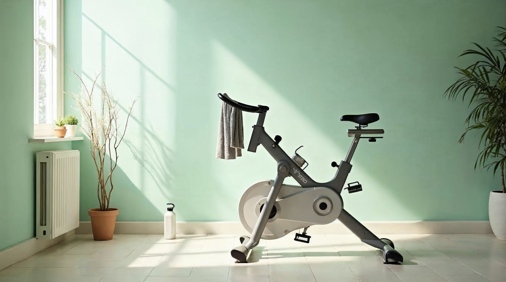
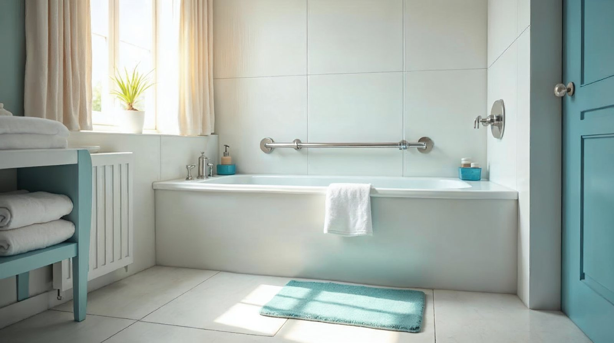
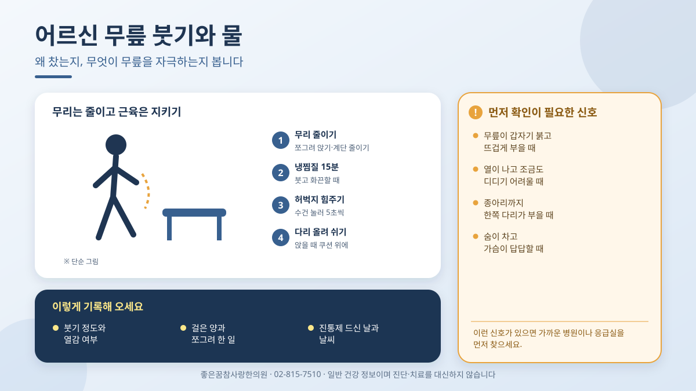

이종호 한의사 감수좋은꿈참사랑한의원 대표원장 (한의사 면허번호 19769)발행 2026-11-26 · 수정 2026-11-26
이 글의 차례
김장을 마치고 며칠 뒤, 어르신 한 분이 무릎을 감싸 쥐고 진료실에 들어오십니다. "무릎이 퉁퉁 부어서 굽혀지지가 않아요. 물이 찼나 봐요." 바지를 걷어 보면 한쪽 무릎이 다른 쪽보다 둥그렇게 부어 있고, 무릎뼈 주변의 오목한 자리가 사라져 있습니다.
무릎에 물이 찼다는 말은 어르신들께 무척 익숙한 표현입니다. 그런데 이 말을 들으면 걱정이 앞서기도 합니다. 물을 빼야 하는지, 한 번 빼면 계속 차는 건 아닌지, 걸어도 되는지 쉬어야 하는지 궁금한 것이 많아집니다.
무릎에 물이 차는 것은 그 자체로 병의 이름이라기보다 무릎 안에서 무언가가 자극을 받고 있다는 신호입니다. 그래서 진료실에서는 물이 찼다는 사실보다 왜 찼는지, 무엇이 무릎을 자극하고 있는지를 함께 찾아봅니다.
이 글에서는 어르신 무릎이 붓고 물이 차는 이유, 비슷해 보이지만 다르게 살펴야 할 경우, 집에서 쉬고 움직이는 방법을 차근차근 정리해 보겠습니다.
무릎에 물이 찬다는 것은 무슨 뜻인가요
무릎 관절 안에는 원래 소량의 관절액이 있습니다. 관절이 부드럽게 움직이도록 기름칠을 해 주고 연골에 영양을 전해 주는 역할을 합니다. 평소에는 아주 적은 양이라 겉에서는 느껴지지 않습니다.
그런데 관절 안쪽의 막이 자극을 받으면 이 관절액이 많이 만들어집니다. 몸이 다친 곳을 보호하려고 반응하는 것입니다. 이렇게 늘어난 관절액이 무릎을 부풀게 하고 묵직하게 만드는데, 이것을 흔히 무릎에 물이 찼다고 말합니다.
물이 많이 차면 무릎이 끝까지 굽혀지지 않고, 쪼그려 앉거나 계단을 내려가기가 어려워집니다. 무릎 뒤쪽이 당기고 터질 것 같다고 말씀하시는 분도 있습니다. 아침에 일어나 무릎이 뻣뻣하다가 움직이면 조금 풀리는 경우도 흔합니다.
왜 어르신 무릎에는 물이 자주 찰까요
어르신 무릎에 물이 차는 가장 흔한 이유는 무릎 연골이 닳으면서 생기는 퇴행성 변화입니다. 연골이 얇아지고 표면이 거칠어지면 그 조각이나 자극이 관절막을 건드려 관절액이 늘어납니다. 여기에 무리한 사용이 더해지면 붓기가 확 올라옵니다.
- 김장, 대청소, 쪼그려 앉아 하는 밭일처럼 무릎을 오래 굽힌 경우
- 장시간 걷거나 등산, 계단을 많이 오르내린 경우
- 체중이 늘어 무릎이 받는 무게가 커진 경우
- 넘어지거나 부딪혀 무릎 안쪽 구조가 다친 경우
- 허벅지 앞 근육이 약해져 무릎을 받쳐 주지 못하는 경우
- 통풍처럼 관절에 결정이 쌓이는 경우
허벅지 앞 근육은 무릎의 충격을 받아 주는 완충 역할을 합니다. 연세가 들며 이 근육이 줄어들면 걸을 때마다 무릎 관절이 그대로 충격을 받게 됩니다. 근육을 지키는 것이 무릎을 지키는 일과 가깝다고 말씀드리는 이유입니다.
한의학에서는 무릎에 물이 차는 모습을 습한 기운이 관절에 머무른 것으로 보기도 하고, 열이 뭉쳐 붓고 화끈한 모습, 몸이 차고 기운이 약해 붓기가 잘 빠지지 않는 모습 등으로 나눠 봅니다. 같은 붓기라도 어느 쪽에 가까운지에 따라 생활에서 신경 쓸 부분이 달라집니다.
물을 빼면 계속 차나요
어르신들이 가장 많이 물으시는 것 가운데 하나입니다. 물을 빼는 것이 물을 더 차게 만드는 것은 아닙니다. 물이 다시 차는 것은 무릎 안의 자극이 아직 남아 있기 때문입니다. 원인이 계속되면 빼도 다시 차고, 자극이 가라앉으면 물도 줄어듭니다.
물을 뺄지 말지는 정형외과에서 무릎 상태를 보고 정할 일입니다. 물이 많아 무릎을 거의 굽히지 못하거나, 원인을 확인하기 위해 관절액을 검사해야 할 때 빼기도 합니다. 한의원에서는 관절액을 직접 빼지 않으며, 필요하다면 정형외과 진료를 권해 드립니다.
중요한 것은 물을 뺀 다음입니다. 무엇이 무릎을 자극하고 있었는지 생활에서 찾아 줄여 나가야 다시 차는 일이 줄어듭니다. 무리한 일, 체중, 근육, 걷는 습관을 함께 살펴보는 이유가 여기에 있습니다.

비슷해 보여도 나눠 볼 것들
무릎이 부었다고 모두 관절 안에 물이 찬 것은 아닙니다. 무릎뼈 바로 앞이 말랑하게 부어오른 경우는 관절 안이 아니라 무릎뼈 앞 주머니에 물이 찬 경우일 수 있습니다. 무릎을 꿇고 걸레질을 오래 하신 뒤에 흔히 생깁니다.
무릎 뒤쪽 오금에 말랑한 혹처럼 부풀어 오르는 경우도 있습니다. 관절 안의 물이 뒤쪽 주머니로 밀려 나와 생기는 경우가 많아, 관절 안의 상태를 함께 살펴야 합니다. 종아리까지 붓고 아프다면 다른 원인도 확인해야 합니다.
양쪽 무릎이 아니라 다른 관절도 함께 붓고, 아침에 손가락까지 뻣뻣하다면 류마티스 쪽도 생각해 볼 필요가 있습니다. 엄지발가락이나 발목이 붉게 부었던 적이 있다면 통풍도 함께 살핍니다. 이런 경우에는 내과나 류마티스내과 진료를 함께 권해 드립니다.
어르신 무릎은 오래 앉아 계시다가 일어나실 때 특히 뻣뻣하게 느껴지기 쉽습니다. 일어나시기 전에 앉은 채로 무릎을 몇 번 폈다 굽혔다 하며 미리 풀어 주시면 첫걸음이 한결 수월해집니다. 텔레비전을 보실 때도 한 시간에 한 번은 일어나 집 안을 걸어 보세요.
무릎 붓기를 두고 자주 헷갈리는 것
첫째, 무릎이 아프면 완전히 쉬어야 한다는 생각입니다. 붓기와 열감이 심한 초기에는 무리를 줄이는 것이 맞지만, 오래 움직이지 않으면 허벅지 근육이 빠르게 줄어 무릎이 더 약해집니다. 아프지 않은 범위의 움직임은 이어 가시는 것이 좋습니다.
둘째, 무릎에 좋다는 음식이나 영양제만 챙기면 된다는 생각입니다. 드시는 것도 중요하지만, 무릎이 받는 무게와 반복되는 동작, 근육의 힘이 붓기에 더 크게 작용하는 경우가 많습니다. 영양제를 드신다면 진료 때 알려 주세요.
셋째, 무릎 보호대를 하루 종일 차고 있으면 좋다는 생각입니다. 보호대는 오래 걷거나 일할 때 도움이 될 수 있지만, 하루 종일 꽉 조이면 오히려 혈액순환을 막고 근육이 게을러질 수 있습니다. 필요한 때만 쓰시길 권합니다.
넷째, 한쪽 무릎만 아프면 그쪽만 살피면 된다는 생각입니다. 한쪽이 아프면 자신도 모르게 반대쪽 다리와 허리에 무게를 더 싣게 됩니다. 그래서 반대쪽 무릎과 허리, 고관절을 함께 살펴봅니다.
계절도 무릎에 영향을 줍니다. 추운 날에는 근육과 관절 주변이 굳어 아침 뻣뻣함이 길어지고, 습하고 궂은 날에는 무겁고 시린 느낌이 커진다고 말씀하시는 분이 많습니다. 이런 날에는 무릎을 따뜻하게 감싸고 움직이기 전에 가볍게 풀어 주세요.

먼저 이렇게 여쭙니다
처음 오시면 대략 이런 순서로 여쭙니다. 미리 생각해 오시면 이야기가 수월해집니다.
- 언제부터 부었고, 그 전에 무릎을 많이 쓰거나 부딪힌 일이 있었나요?
- 한쪽 무릎인가요, 양쪽인가요? 다른 관절도 붓거나 아픈가요?
- 무릎을 끝까지 굽히고 펼 수 있나요?
- 아침에 뻣뻣한 시간은 얼마나 되나요?
- 예전에 무릎 물을 뺐거나 주사를 맞은 적이 있나요?
- 드시는 약 가운데 진통제나 피를 묽게 하는 약이 있나요?
정형외과에서 엑스레이나 다른 검사를 받으셨다면 결과를 함께 알려 주세요. 연골 상태나 관절 사이 간격을 알고 있으면 어디까지 움직여도 되는지 정하는 데 큰 도움이 됩니다.
하루 동안 얼마나 걸으시는지, 집이 언덕이나 계단이 많은 곳인지, 쪼그려 앉아 하시는 일이 있는지도 여쭙니다. 무릎은 생활 속에서 반복되는 동작의 영향을 크게 받기 때문입니다.

일상에서 먼저 해 볼 수 있는 것
무릎이 부었을 때는 쉬는 것과 움직이는 것 사이의 균형이 중요합니다. 무리는 줄이되 완전히 멈추지는 않는 것이 요령입니다.
- 부은 초기에는 쪼그려 앉기, 계단, 무거운 짐 들기 줄이기
- 열감이 있을 때는 수건에 싼 냉찜질을 15분 정도
- 앉거나 누울 때 다리를 쿠션 위에 올려 두기
- 누워서 무릎 뒤를 바닥 쪽으로 눌러 허벅지에 힘주기
- 의자에 앉아 무릎을 천천히 폈다 내리기
- 걸을 때는 지팡이나 난간을 활용해 무게 나누기
붓기와 열감이 가라앉은 뒤에도 허벅지 근육 운동은 꾸준히 이어 가시는 것이 좋습니다. 누워서 무릎 뒤에 수건을 말아 넣고 그 수건을 눌러 5초간 허벅지에 힘을 주었다 푸는 동작을 10번씩, 하루 두세 번 해 보세요.
의자에 앉아 한쪽 다리를 앞으로 쭉 펴서 몇 초 버텼다가 천천히 내리는 동작도 좋습니다. 아프지 않은 범위에서만 하시고, 하고 난 뒤 붓기가 더 올라온다면 횟수를 줄이세요. 운동은 다음 날 무릎 상태를 보며 조절하는 것이 좋습니다.
열감이 없고 뻣뻣함이 주로 남아 있다면 따뜻한 수건으로 무릎을 감싸 주는 것이 편할 수 있습니다. 붓고 화끈할 때는 차갑게, 뻣뻣하고 시릴 때는 따뜻하게라고 기억해 두시면 됩니다. 어느 쪽이든 피부가 상하지 않도록 수건을 대고 하세요.
체중이 조금 늘어난 분은 무릎이 받는 부담을 줄이는 것만으로도 도움이 됩니다. 걸을 때 무릎은 몸무게보다 훨씬 큰 무게를 받기 때문입니다. 무리한 식사 조절보다 저녁 간식과 국물을 조금씩 줄여 보시길 권합니다.
신발도 한번 살펴봐 주세요. 밑창이 너무 얇거나 딱딱한 신발, 뒤꿈치가 닳아 한쪽으로 기운 신발은 무릎에 부담을 줍니다. 쿠션이 적당하고 발을 잘 감싸는 신발이 좋습니다.
계단을 오르내리실 때는 순서를 기억해 두시면 좋습니다. 올라갈 때는 덜 아픈 다리부터, 내려갈 때는 아픈 다리부터 내딛고, 난간을 잡아 무게를 나누세요. 이 작은 순서만으로도 아픈 무릎이 받는 부담이 줄어듭니다.
한의원에서 함께 살필 수 있는 경우
- 정형외과 진료와 함께 무릎 붓기와 뻣뻣함이 반복되는 경우
- 무리한 뒤마다 무릎이 붓고 묵직한 경우
- 무릎 주변 힘줄과 근육이 함께 아프고 굳은 경우
- 무릎이 시리고 날씨가 궂으면 더 불편한 경우
- 무릎 때문에 걷는 양이 줄고 기운까지 떨어진 경우
좋은꿈참사랑한의원에 오시면 먼저 아래 '먼저 확인이 필요한' 신호가 없는지부터 봅니다. 그다음 맥을 짚고, 무릎과 그 주변, 허리와 고관절, 발목을 함께 확인합니다. 필요하다고 판단되면 초음파로 관절 안과 주변 힘줄의 상태를 살핍니다.
진찰한 내용을 바탕으로 생활에서 바꿔 볼 것 하나와 함께 침, 약침, 초음파 유도 약침, 체외충격파, 물리치료, 한약 상담 가운데 지금 상태에 맞는 것을 고릅니다. 열감이 심하거나 붓기가 큰 시기에는 자극을 줄이고, 가라앉은 뒤 움직임을 되찾는 쪽으로 진료 방향을 조절합니다.
한약을 상의할 때는 드시는 약을 모두 확인한 뒤 신중하게 정하고, 처방받은 약은 처방한 선생님과 상의 없이 멈추지 않습니다. 어르신 무릎은 정형외과 진료와 함께 가는 것이 좋습니다. 검사와 물 빼기, 수술 여부 같은 판단은 정형외과에서 하시고, 한의원에서는 그 사이의 통증과 굳음, 생활 습관을 함께 살핀다고 생각해 주세요.
이렇게 기록해 오시면 상담이 쉬워집니다
무릎 붓기는 날마다 오르내려서 기록을 해 두시면 무엇이 붓기를 올리는지 보이기 시작합니다. 2주 정도 간단히 적어 보세요.
- 무릎 붓기 정도(없음·조금·많이)와 열감 여부
- 아침에 뻣뻣했던 시간
- 그날 걸은 양이나 오른 계단, 쪼그려 앉아 한 일
- 냉찜질이나 온찜질을 한 날과 그 뒤 느낌
- 진통제를 드신 날
- 날씨가 궂었던 날 표시
휴대폰으로 매일 같은 자리에서 양쪽 무릎을 나란히 찍어 두시는 것도 좋은 방법입니다. 말로 설명하기 어려운 붓기의 변화를 한눈에 볼 수 있습니다.

가족이 함께 살펴 주시면 좋은 것
어르신은 무릎이 아파도 집안일을 멈추지 않으시는 경우가 많습니다. 김장이나 명절 준비처럼 무릎을 오래 굽히는 일이 있을 때는 낮은 의자를 놓아 드리거나, 일을 나눠 맡아 주시면 무릎 부담이 크게 줄어듭니다.
집 안에서는 바닥에 앉고 일어서는 일을 줄일 수 있도록 식탁과 의자, 침대를 쓰시도록 도와주세요. 화장실 변기 옆과 현관에 손잡이를 두면 무릎에 실리는 무게를 덜 수 있습니다.
이런 증상은 먼저 확인이 필요합니다
- 무릎이 갑자기 붉고 뜨겁게 부으면서 열이 나고 조금도 디디기 어려운 경우
- 종아리까지 한쪽 다리가 붓고 아프거나, 숨이 차고 가슴이 답답한 경우
이런 신호가 있으면 한의원보다 가까운 병원이나 응급실을 먼저 찾으세요.
함께 읽으면 좋은 글
- 계단에서 시큰하고 자주 붓는 무릎 퇴행성 관절염은 어떻게 살피나요?
- 무릎에 물이 찼을 때 초음파로는 무엇을 확인할 수 있나요?
- 계단을 내려갈 때 무릎이 아프면 한의원에서는 무엇을 먼저 묻나요?
- 무릎에서 뚝뚝, 우두둑 소리가 날 때는 괜찮은 소리와 살펴볼 소리를 어떻게 나누나요?
- 80대 어르신이 의자에서 일어서기 어려워질 때 가족은 무엇을 살펴보나요?

여쭙는 것
- 언제부터 부었고, 그 전에 무릎을 많이 쓰거나 부딪힌 일이 있었나요?
- 한쪽 무릎인가요, 양쪽인가요? 다른 관절도 붓거나 아픈가요?
- 무릎을 끝까지 굽히고 펼 수 있나요?
생활에서 해 볼 것
- 부은 초기에는 쪼그려 앉기, 계단, 무거운 짐 들기 줄이기
- 열감이 있을 때는 수건에 싼 냉찜질을 15분 정도
- 앉거나 누울 때 다리를 쿠션 위에 올려 두기
한의원에서 함께 살필 것
- 정형외과 진료와 함께 무릎 붓기와 뻣뻣함이 반복되는 경우
- 무리한 뒤마다 무릎이 붓고 묵직한 경우
- 무릎 주변 힘줄과 근육이 함께 아프고 굳은 경우
먼저 확인이 필요한 신호
- 무릎이 갑자기 붉고 뜨겁게 부으면서 열이 나고 조금도 디디기 어려운 경우
- 종아리까지 한쪽 다리가 붓고 아프거나, 숨이 차고 가슴이 답답한 경우
한눈에 보는 표
| 구분 | 핵심 |
|---|---|
| 여쭙는 것 | 언제부터 부었고, 그 전에 무릎을 많이 쓰거나 부딪힌 일이 있었나요? 한쪽 무릎인가요, 양쪽인가요? 다른 관절도 붓거나 아픈가요? |
| 생활에서 해 볼 것 | 부은 초기에는 쪼그려 앉기, 계단, 무거운 짐 들기 줄이기 열감이 있을 때는 수건에 싼 냉찜질을 15분 정도 |
| 한의원에서 함께 살필 것 | 정형외과 진료와 함께 무릎 붓기와 뻣뻣함이 반복되는 경우 무리한 뒤마다 무릎이 붓고 묵직한 경우 |
| 먼저 확인이 필요한 신호 | 무릎이 갑자기 붉고 뜨겁게 부으면서 열이 나고 조금도 디디기 어려운 경우 종아리까지 한쪽 다리가 붓고 아프거나, 숨이 차고 가슴이 답답한 경우 |
자주 묻는 질문
무릎에 물이 찼을 때 걸어도 되나요?
붓기와 열감이 심한 초기에는 오래 걷기와 계단을 줄이시는 것이 좋습니다. 다만 완전히 움직이지 않으면 근육이 빠르게 약해지니, 집 안에서 가볍게 걷고 앉아서 하는 허벅지 운동은 이어 가시길 권합니다.
한의원에서 무릎 물을 빼 주나요?
한의원에서는 관절액을 직접 빼지 않습니다. 물을 빼거나 관절액 검사가 필요한지는 정형외과에서 판단하시고, 한의원에서는 그와 함께 통증과 굳음, 생활 습관을 살핍니다.
냉찜질과 온찜질 중 어느 것이 좋은가요?
붓고 화끈한 시기에는 냉찜질, 열감 없이 뻣뻣하고 시린 시기에는 온찜질이 편한 경우가 많습니다. 어느 쪽이든 15분 안팎으로 하시고 수건을 대어 피부를 보호하세요.
무릎 때문에 진통제를 자주 먹는데 한약을 함께 먹어도 되나요?
드시는 약을 모두 확인하고 신중하게 정합니다. 진통제를 얼마나 자주 드시는지, 위가 불편하지 않은지도 함께 여쭙고, 필요하면 처방한 선생님과 상의하시도록 안내합니다.
좋은꿈참사랑한의원은 재진 때 지난번 이야기부터 이어서 여쭙니다. 진료시간과 예약은 오시는 길에서 확인하세요.
어디서 상담받을 수 있나요?
좋은꿈참사랑한의원은 서울 동작구 만양로2길 2 신성빌딩 3층·5층(서울 동작구 상도동, 7호선 상도역 3번 출구 근처)에 있습니다. 한의사 3명(이종호 대표원장, 조영기 수석진료원장, 정원영 진료원장)이 진료합니다. 진료시간은 평일 09:30~20:00(점심 13:00~14:00), 토·일·공휴일 09:30~15:00이며, 방문 전 전화로 확인을 권합니다. 예약은 네이버 예약, 카카오톡 상담, 전화 02-815-7510로 받습니다.
이 글은 일반적인 건강 정보이며 개인의 진단이나 치료를 대신하지 않습니다. 증상이 있거나 복용 중인 약이 있다면 진료를 통해 확인하세요. 치료 효과는 개인마다 다를 수 있습니다.
작성 기준: 일반적으로 알려져 있는 건강 정보를 참고해 정리했습니다(대표원장 감수). 증상 기록은 1~2주 동안 하루 1회, 비슷한 시간에 적어 오시면 지난 상태와 비교하기 쉽습니다.